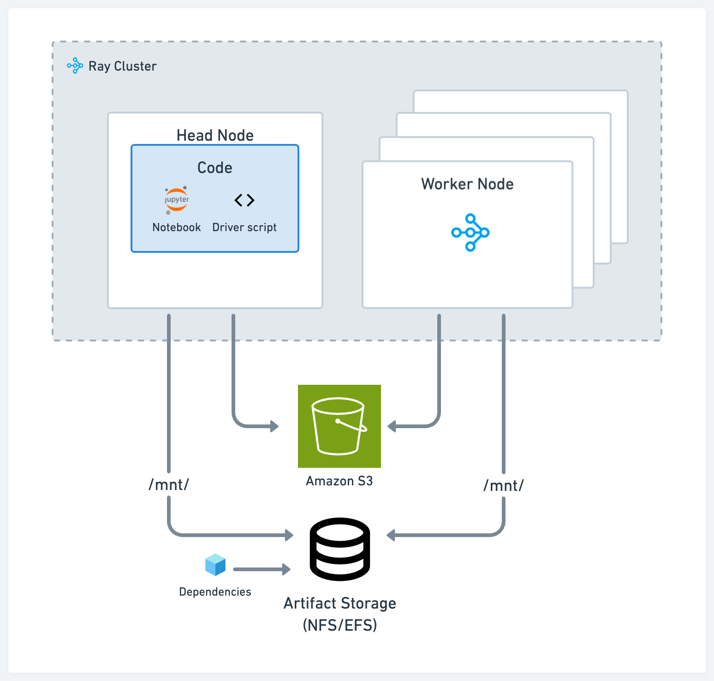
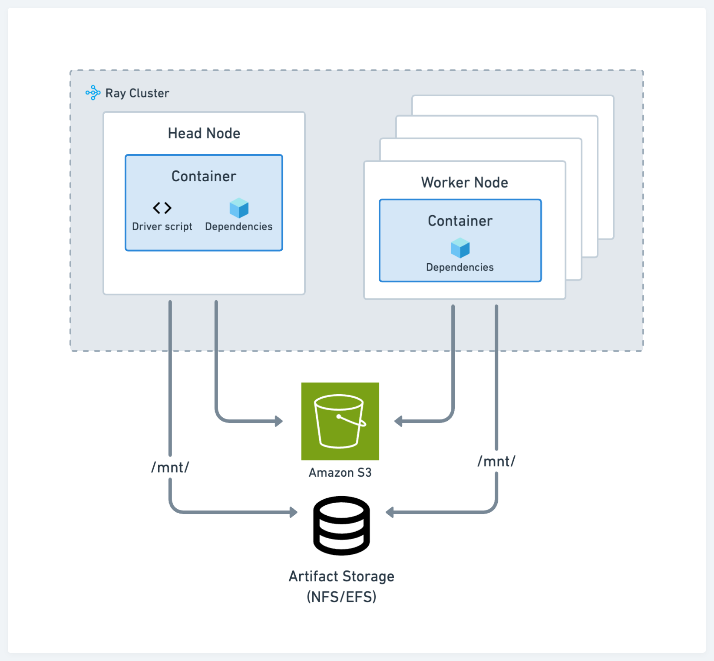

存储和依赖关系的最佳实践
Contents
存储和依赖关系的最佳实践#
本文档包含有关为 Kubernetes 上的 Ray 部署设置存储和处理应用程序依赖项的建议。
当您在 Kubernetes 上设置 Ray 时， KubeRay 文档 概述了如何配置 Operator 来执行和管理 Ray 集群生命周期。 但是，作为管理员，您可能仍然对实际用户工作流程有疑问。例如：
如何在 Ray 集群上传送或运行代码？
您应该为工件设置什么类型的存储系统？
您如何处理应用程序的包依赖性？
这些问题的答案因开发和生产而异。下表总结了每种情况的建议设置：
交互开发 |
生产 |
|
|---|---|---|
集群配置 |
KubeRay YAML |
KubeRay YAML |
代码 |
在头节点上运行驱动程序或 Jupyter Notebook |
打包代码到 Docker 镜像 |
Artifact 存储 |
设置 EFS |
设置 EFS |
包依赖项 |
安装到 NFS |
打包到 Docker 镜像 |
表 1：比较推荐的开发和生产设置的表。
交互开发#
为了为数据科学家和机器学习从业者提供交互式开发环境，我们建议以减少开发人员上下文切换并缩短迭代时间的方式设置代码、存储和依赖项。
存储#
在开发过程中，根据您的用例，使用这两种标准解决方案之一进行 artifact 和日志存储：
符合 POSIX 标准的网络文件存储，例如网络文件系统 (NFS) 和弹性文件服务 (EFS)：当您希望以低延迟跨不同节点访问工件或依赖项时，此方法非常有用。例如，在不同 Ray 任务上训练的不同模型的实验日志。
云存储，例如 AWS Simple Storage Service (S3) 或 GCP Google Storage (GS)：此方法对于需要高吞吐量访问的大型工件或数据集非常有用。
Ray 的 AI 库（例如 Ray Data、Ray Train 和 Ray Tune）具有开箱即用的功能，可以从云存储和本地或网络存储中读取和写入。
Driver 脚本#
在集群的头节点上运行主脚本或驱动程序脚本。 Ray Core 和库程序通常假设驱动程序位于头节点上并利用本地存储。例如，Ray Tune 默认在头节点生成日志文件。
典型的工作流程如下所示：
在头节点上启动 Jupyter 服务器
通过 SSH 连接到头节点并在那里运行驱动程序脚本或应用程序
使用 Ray Job Submission 客户端将代码从本地计算机提交到集群
依赖项#
对于本地依赖项，例如，如果您正在使用单一存储库或外部依赖项（例如 pip 包），请使用以下选项之一：
将代码并将软件包安装到 NFS 上。好处是您可以快速与其余代码库和依赖项进行交互，而无需每次都跨集群传送。
通过 Ray Job Submission Client 使用 runtime env，它可以从 S3 拉取代码或将代码从本地工作目录发送到远程集群。
将远程和本地依赖项打包 Docker 镜像供所有的节点使用。参考 自定义 Docker 镜像。 这种方法是将应用程序部署到 Kubernetes 的常见方法，，但它也是摩擦最大的选项。
生产#
生产环境建议符合标准 Kubernetes 最佳实践。请参阅下图中的配置：
存储#
存储系统的选择在开发和生产过程中保持不变。
代码和依赖#
为集群的所有节点将代码、远程和本地依赖打包到 Docker 镜像。这种方法是将应用程序部署到 Kubernetes 的常见方法。参考 自定义 Docker 镜像。
使用云存储和 runtime env 是一种不太受欢迎的方法，因为它可能不如容器路径那样可重复，但它仍然可行。在这种情况下，除了指定运行应用程序所需的 pip 包之外，还可以使用运行时环境选项从云存储下载包含代码和其他私有模块的 zip 文件。